De ce merge simplu: aveai deja 6 replici înregistrate. Am despărțit cele 2 acte care conțineau câte 2 replici
(Actul 2 și Actul 4 de dinainte), și acum fiecare replică e propriul clip, cu propria poză deja generată —
nu mai trebuie nicio poză nouă, doar reorganizare. Zero start+final în același clip, zero crossfade — un singur cadru, o singură replică, un singur clip.
Despre durate: unele replici sunt scurte (mai ales ultima, cea de brand). Am scris prompturile ca vizualul să rămână viu 20 de secunde
întregi chiar dacă vocea e mai scurtă. Dacă preferi, poți seta „Duration" mai mic decât 20 la Higgsfield pentru clipurile cu replică scurtă — decizia ta, vezi ce iese mai bine la montaj.
Setări obligatorii, la fiecare clip: Mode = omni_reference · Duration = 20 (sau mai puțin, dacă tai) ·
Audio = OFF mereu (inclusiv la clipurile cu mp3 de referință pentru gură — acela nu adaugă sunet, doar mișcă gura).
~20 sec
✅ Poza gata
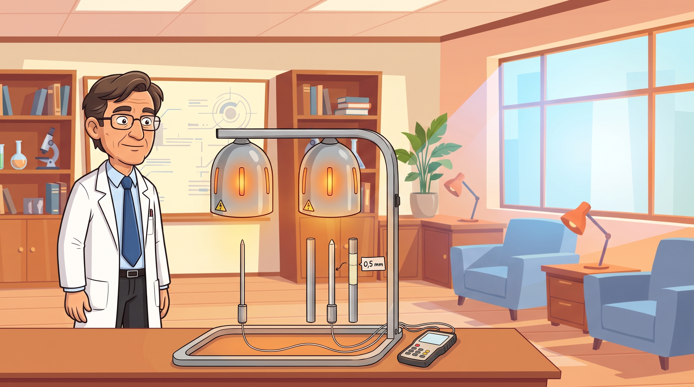
Poze de referință (@image1 → @image6)
 @image1birou
@image1birou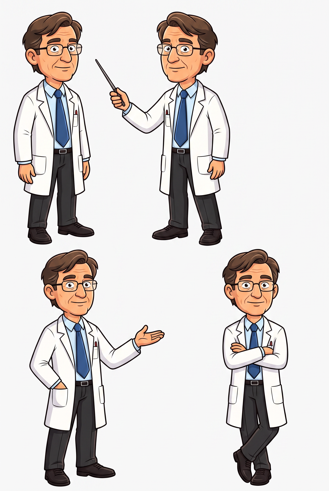
@image2savant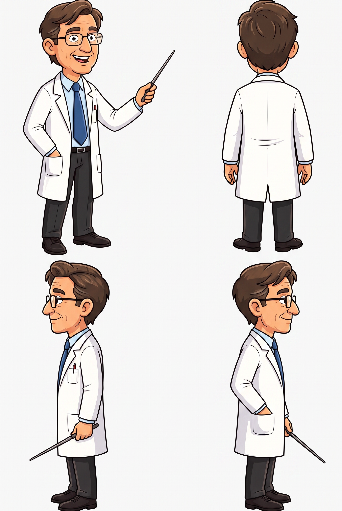
@image3turnaround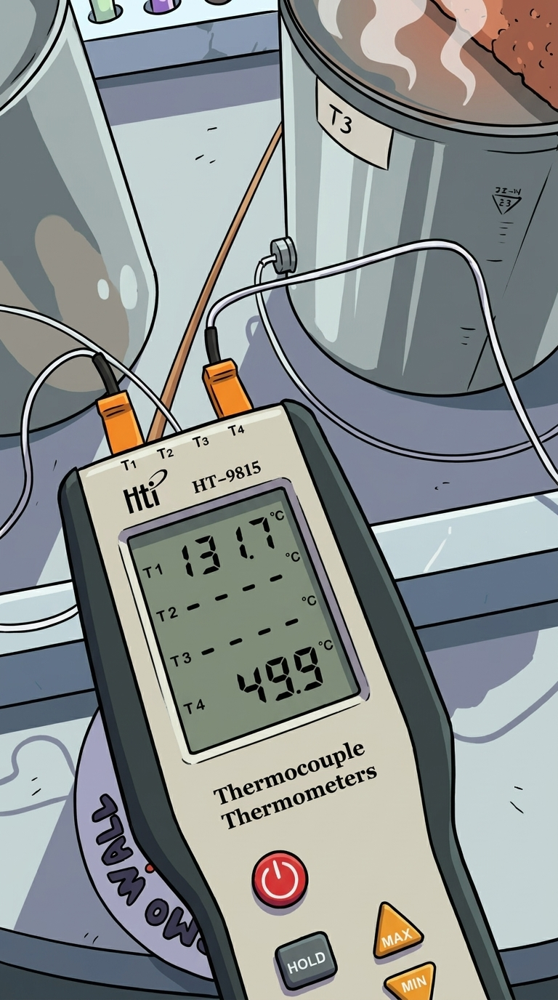
@image6aparat
Promptul video
Duration 20 seconds, continuous motion for the ENTIRE duration, nothing goes fully still. Keep the scientist's face and proportions consistent with @image2 and @image3 throughout. The scientist is talking on camera for almost the entire clip — his mouth continuously opens and closes, articulating clearly, syllable by syllable, matching a calm deliberate speech rhythm, never staying shut or frozen while he is on screen. Seconds 0-2: lamps ignite, glow ramps up, mouth still closed. From second 2 onward: the mouth is actively talking in sync with speech, while heat-shimmer waves continuously drift downward from the lamps toward the probes in a repeating loop every 2-3 seconds, and the small screen keeps a slow breathing glow pulse. Camera performs a slow continuous push-in toward the stand over the full 20 seconds. No text changes, no on-screen labels beyond what's already drawn.
Gura: atașezi și replica1_act1.mp3 ca „audio de referință" (driving audio).
Vocea ta: replica pe care deja o ai pentru Experiment.
~20 sec
✅ Poza gata
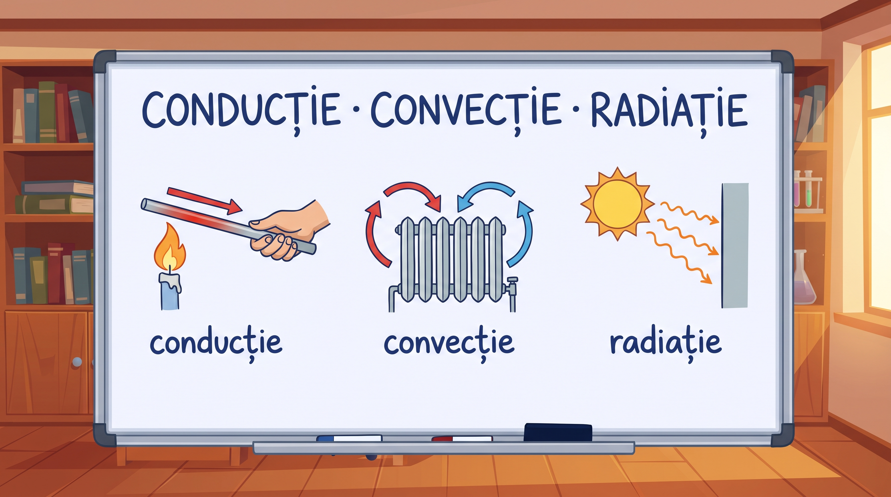
Poze de referință (@image1 → @image3)
@image1birou
@image2turnaround
@image3clip anterior
Personajul nu apare în cadrul ăsta — doar tabla. Poze mai puține, e ok.
Promptul video
Duration 20 seconds, continuous motion for the ENTIRE duration, nothing goes fully still. The whiteboard drawings feel alive with subtle looping motion the whole time: the arrow on the conduction rod pulses every 2 seconds, the convection radiator's arrows loop continuously up and down, the radiation sun's rays shimmer and a faint warm flash hits the wall roughly every 2 seconds. Camera performs a slow continuous drift across the whiteboard, reading left to right, for the full 20 seconds, with a very slight zoom-in toward the end. No changes to the written text. No character in this shot.
Vocea ta: replica despre cele trei căi (conducție/convecție/radiație). Fără gură de sincronizat aici.
~20 sec
✅ Poza gata
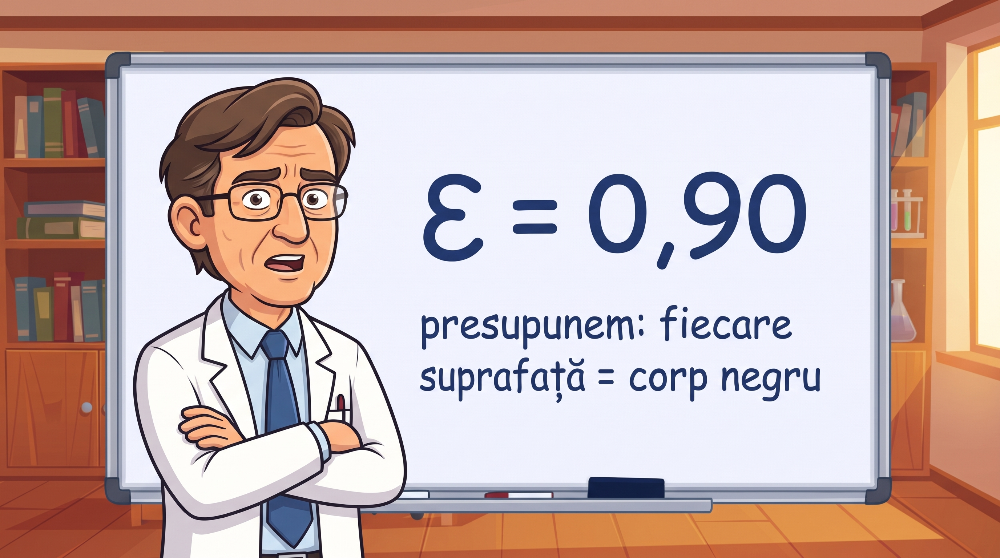
Poze de referință (@image1 → @image6)
@image1brațe încrucișate
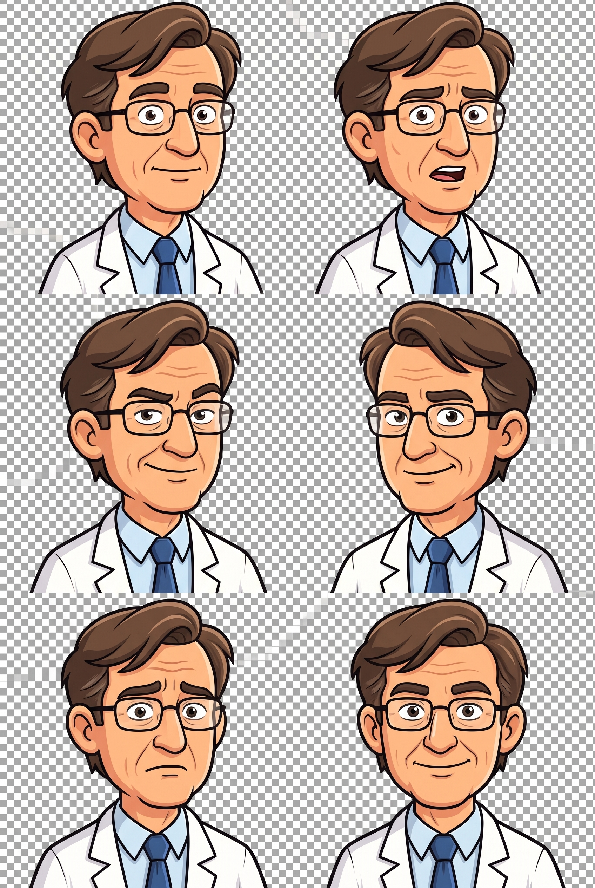
@image2expresii/gura@image3turnaround
@image4birou
@image5clip 1
@image6clip 2
Promptul video
Duration 20 seconds, continuous motion for the ENTIRE duration, nothing goes fully still. Keep the scientist's face, hair, and outfit consistent with @image1, @image2 and @image3 throughout. From second 0, his mouth is continuously and clearly talking — opening and closing syllable by syllable, matching a calm deliberate speech rhythm, actively speaking, not idling. Around second 10, speech settles and he holds a confident calm expression, mouth at rest but still breathing visibly and occasionally blinking, while the green "ε = 0,90" rectangle keeps a slow breathing glow pulse and the dimmed background panels keep faint continuous looping motion. Camera performs a very slow continuous push-in over the full 20 seconds. No changes to the written text on the board.
Gura: atașezi replica ta despre ε = 0,90 / corp negru ca „audio de referință", acoperind primele secunde ale clipului (cât vorbește).
Vocea ta: replica despre ipoteza corpului negru — cea mai importantă pentru sincronizare.
~20 sec
✅ Poza gata
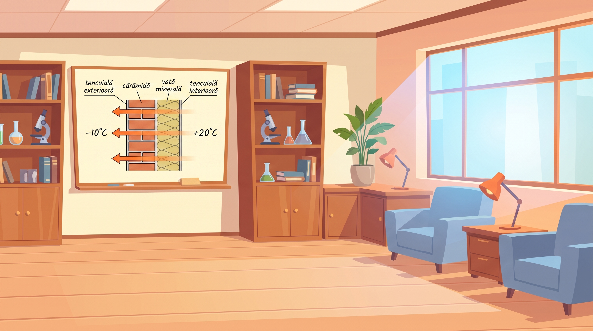
Poze de referință (@image1 → @image5)
@image1birou
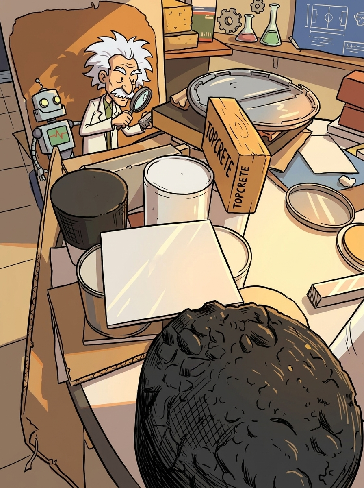
@image2materiale@image3clip 1
@image4clip 3
@image5turnaround
Promptul video
Duration 20 seconds, continuous motion for the ENTIRE duration. Keep the room lighting and style consistent with @image1, @image3 and @image4. The small arrows drawn through the wall layers continuously animate flowing left to right in an endless loop, a new pulse roughly every second, slowing and dimming through the insulation layer, non-stop until the last frame. Camera performs a slow continuous horizontal drift across the whiteboard for the full 20 seconds, plus a very slight zoom-in in the second half. No changes to the written text or labels. No character in this shot.
Vocea ta: replica despre perete/straturi/energie. Fără gură de sincronizat.
~20 sec
✅ Poza gata
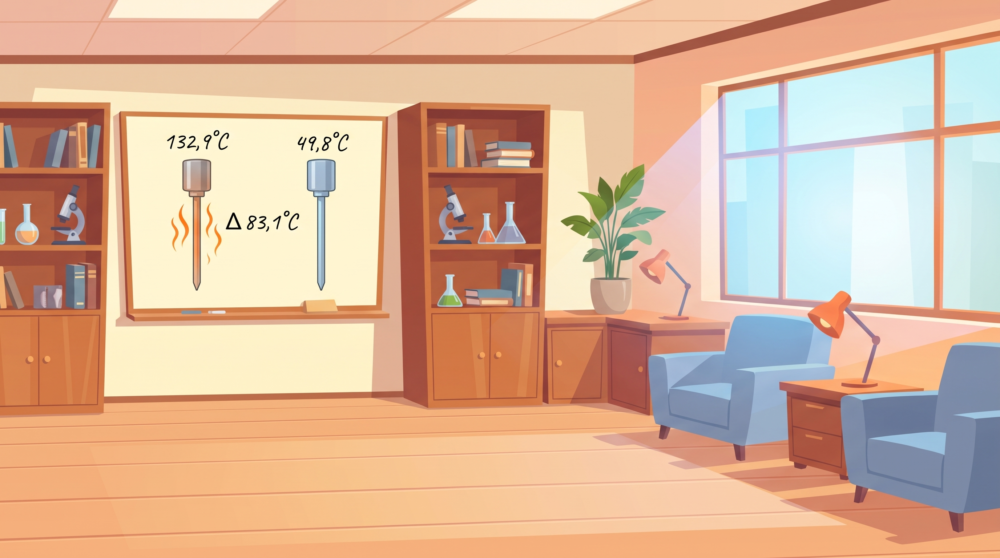
Poze de referință (@image1 → @image4)
@image1birou
@image2probe
@image3stand
@image4clip 4
Promptul video
Duration 20 seconds, continuous motion for the ENTIRE duration, nothing goes fully still. Keep the room style consistent with @image1 and @image4. The wavy orange lines above the left probe continuously animate upward in a nonstop loop for the full 20 seconds, a new wave roughly every second, intensifying slightly over time; the right probe keeps a very slow subtle blue shimmer pulse, calm but never fully frozen. The written numbers stay fixed, unchanged, the whole time. Camera performs a very slow continuous push-in over the full 20 seconds. No character in this shot.
Vocea ta: replica cu cifrele (132,9 / 49,8 / Δ 83,1). Fără gură de sincronizat.
6
Clip 6 — Laboratorul lui
~20 sec · clip nou, deja generat de tine
Pauza de respirație dintre cifre și brand: camera se plimbă prin laboratorul lui real, lămpile se aprind, îl vezi pe el lângă echipament. Rol dramatic: „nu e o simulare, e biroul lui" — întărește credibilitatea chiar înainte de reveal-ul de nume.
✅ Clip video deja gata — nu mai generezi nimic
Observație despre stil
Clipul ăsta e într-un stil mai pictural/cinematic (umbre, textură), diferit de restul, care e vector plat curat. Recomandarea mea: păstrează-l așa, ca o schimbare de ton intenționată — „acum ies din diagramă și-ți arăt omul real" — funcționează narativ, nu trebuie regenerat tot filmul ca să se potrivească. Dacă vrei totuși unitate perfectă, varianta e să regenerăm Clipurile 1-5 în acest stil pictural — dar e mult de lucru, decizia ta.
Ce audio să generezi
Asta nu e o simulare. Este propriul meu laborator, cu propriile mele mâini pe fiecare fir și fiecare probă, testate aici, de mine.
💾 replica_laborator.mp3 — ~11 sec, pornește după 2-3 secunde de cameră (camera se plimbă, lămpile se aprind), lasă restul clipului să respire vizual.
~20 sec (replica e scurtă — vezi nota de mai jos)
✅ Poza gata
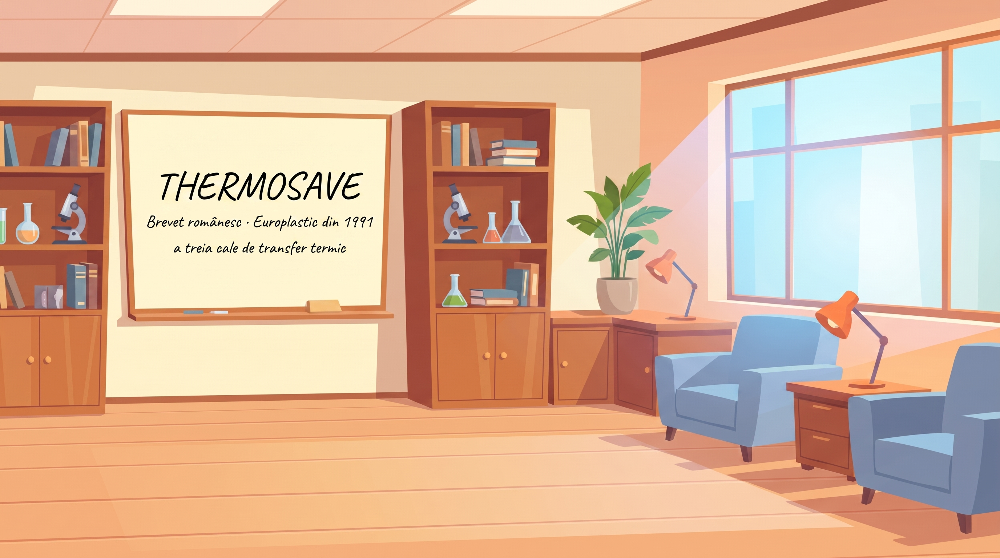
Poze de referință (@image1 → @image3)
@image1birou
@image2clip 5
@image3clip 3
Promptul video
Duration 20 seconds. Seconds 0-4: very subtle, slow fade/settle into the clean board, as if just wiped. Seconds 4-20: the scene stays calm and mostly still, but never perfectly frozen — the grid and lighting have an extremely slow, subtle shimmer, and a very slow, barely perceptible continuous zoom-in over the full remaining duration, so the shot stays visually alive even though almost nothing happens. No text changes, no character.
Vocea ta: „ThermoSave. A treia cale de transfer termic." — foarte scurtă, apoi tăcere voită, apoi impact sonor grav. Dacă 20 sec ți se pare prea mult pentru o replică așa de scurtă, scurtează clipul la generare (Duration 12-15) sau tai-l în montaj — decizia ta.
- Cele 7 clipuri, cap la cap, tranziție scurtă.
- Peste fiecare, vocea ta reală (nu mai ai nevoie de mp3-uri noi — le ai deja).
- La Clip 3, sincronizează gura cu poziția exactă unde ai atașat-o ca audio de referință în Higgsfield.
- Dronă gravă continuă pe tot filmul + impact sonor la finalul Clipului 3 (ε) și la finalul Clipului 7 (Brand).
- Durata totală: 7 × 20 sec = 2:20 — puțin peste ținta de 2:00 din brief, din cauza clipului nou. Dacă vrei să te încadrezi exact în 2:00, scurtează Clipul 6 (Laboratorul lui) sau Clipul 7 (Brand) la montaj — sunt cele cu cea mai puțină informație nouă.